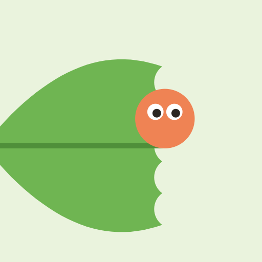

Visual TimerVisual Timer is on the App Store as Visual Timer: Kids Timer. Here is how it works.
Email bkdigitalleads@gmail.com and we reply within two business days. Say which iPhone and iOS version you have.
On Timer, tap a preset (30 seconds to 60 minutes) or turn the dial, pick a scene, and tap Start. For any other time, from 5 seconds to 4 hours, tap Custom at the end of the presets, or tap the time under the dial, and set hours, minutes and seconds. While it runs: pause, add a minute, add five, or start again. The X stops it.
Settings open when you hold the gear for 2 seconds; a ring fills while you hold. A quick tap only shows a hint, so a child cannot wander in.
On a running timer, tap the lock. The first time, a short note explains how it works; tap Lock now. The screen then ignores every touch until a grown-up holds any corner for 2 seconds. While it is locked, a line at the bottom says so and a small mark shows in each corner. To have it on every time, turn on Child lock when a timer starts in Settings. The expand button next to it is classroom mode: the phone turns on its side and the scene and time fill the screen. Both are part of Pro.
Routines are steps in order, each with a picture, a name and a time. Start one and the steps run one after another, with a short cheer in between. The pencil changes a routine: rename it, add, move or remove steps, and pick its scene. Next skips to the following step. Routines are part of Pro.
The app keeps time from the clock, so the time is right even when the phone is locked or another app is open. To hear the end then, allow notifications when the app asks (or in the Settings app, Notifications, Visual Timer) and keep the ring switch on: a notification follows the ring switch. While the app is open, the end sound plays even with the ring switch on silent, the same as the iPhone's own timer, unless you turn off Play sound when the phone is on silent in the app's Settings. Pick the sound there too.
Free: the color disc, the sand jar and the caterpillar, every preset and the dial, one saved timer, every sound and history. Pro adds every scene and color, unlimited saved timers, routines, child lock and classroom mode. Pro is $24.99 a year with 3 days free for new subscribers, $49.99 once for lifetime, or $4.99 a week. On a new iPhone, tap Restore purchases in Settings or on the Pro screen. Manage or cancel a subscription in the Settings app, your name, Subscriptions.
No account, no ads, no analytics, and everything stays on your iPhone. See the privacy policy.